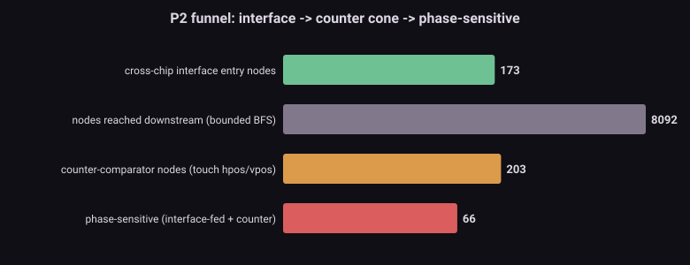
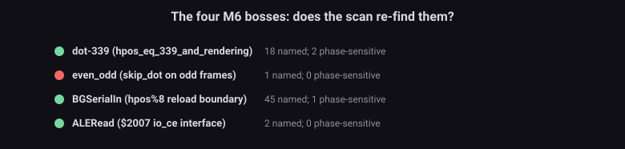

The problem問題 One dot early, four times over早一個 dot,發生四次
A CPU write to $2001 (rendering on/off) or $2007 (VRAM access) does not take effect on the PPU instantly: the signal crosses the package, the board trace, and the receiver's synchronizer — about 24 hc, three dots (M3 ranked these the slowest nets on the die). The 2C02 then compares the current state against a position counter — "are we at dot 339 yet? at hpos%8==7? in the visible frame?" — and acts on the answer. When the engine erases the 24 hc, the write's effect lands one comparison too early, and a per-dot decision flips. The campaigns hit this four times (dot-339, even_odd, ALERead, BGSerialIn) and fixed each with a delay shim. M6 asks: where else could this happen? Enumerate every site where an interface-controlled signal meets a position counter.
CPU 寫入 $2001(渲染開關)或 $2007(VRAM 存取)不會立刻在 PPU 生效:訊號要穿過封裝、板線、接收端的同步器 —— 大約 24 hc、三個 dot(M3 把這些排成晶粒上最慢的網)。2C02 接著把當前狀態拿去和位置計數器比 —— 「到 dot 339 了嗎?到 hpos%8==7 了嗎?在可見幀內嗎?」—— 然後根據答案行動。當引擎把 24 hc 抹掉,寫入效果早一次比較就落地,一個 per-dot 決策就翻了。戰役撞過這個四次(dot-339、even_odd、ALERead、BGSerialIn),每次用延遲 shim 修。M6 問:還有哪裡會發生?列舉每一個介面控制訊號撞上位置計數器的站點。
The method方法 The P2 funnelP2 漏斗
- Interface entry — the cross-chip nets (
io_ce,io_ab,io_db,io_rw) plus the write-latched enables a $2001/$2007 write sets (rendering,bkg/spr_enable): the signals whose arrival timing the delay island governs. 173 nodes. - 介面入口 —— 跨晶片網(
io_ce、io_ab、io_db、io_rw)加上 $2001/$2007 寫入設定的閂鎖致能(rendering、bkg/spr_enable):它們的抵達時機由延遲島掌管。173 個節點。 - Bounded BFS downstream — follow the influence graph from the interface (depth 6). 8,092 nodes reached.
- 有界下游 BFS —— 從介面沿影響圖走(深度 6)。抵達 8,092 個節點。
- Counter-comparator cone — any node whose 1–2 hop fan-in support includes a position-counter bit (
hpos*/vpos*): the places the die asks "are we there yet?". 203 comparators. - 計數器比較器錐 —— 任何 1–2 跳 fan-in 支撐含位置計數器位元(
hpos*/vpos*)的節點:晶粒問「到了嗎?」的地方。203 個比較器。 - Phase-sensitive = the intersection — comparators that are also interface-fed: 66 sites where an early/late arrival changes a per-dot decision.
- 相位敏感 = 交集 —— 同時被介面餵到的比較器:66 個站點,抵達早/晚會改變 per-dot 決策的地方。

Results結果 The bosses re-find themselves魔王自己現身
Ranked by fan-in cone (how many decisions each gates), the top phase-sensitive interfaces read like the campaign's diary:
按 fan-in 錐排序(每個閘控多少決策),最頂端的相位敏感介面讀起來像戰役日記:
| Node節點 | fan-in | What it decides它決定什麼 |
|---|---|---|
hpos_eq_65_and_rendering | 32 | sprite evaluation start精靈評估起點 |
hpos_eq_339_and_rendering | 29 | dot-339 — the StaleSprite bossdot-339 —— StaleSprite 魔王 |
hpos_eq_320_to_335_and_rendering | 17 | sprite fetch window精靈取圖窗 |
hpos_mod_8_eq_0_or_1_and_rendering | 13 | BGSerialIn — the shifter-reload boundaryBGSerialIn —— 移位器 reload 邊界 |
in_visible_frame_and_rendering | 12 | the master render gate主渲染閘 |
The scan re-found three of the four bosses from pure structure — dot-339, BGSerialIn (the hpos%8 reload boundary), and ALERead (the io_ce interface) all fall out of "interface-fed ∩ counter-comparator", with no hand-list. The fourth, even_odd, is named (skip_dot) but is the family's edge case: it mixes a frame-parity toggle rather than a $2001 enable, so it sits just outside the pure enable×counter intersection — correctly, since it is the one M6 boss whose trigger is not an interface arrival but a frame counter's least significant bit.
掃描只靠純結構就重新找到四個魔王的三個 —— dot-339、BGSerialIn(hpos%8 reload 邊界)、ALERead(io_ce 介面)全都從「介面餵到 ∩ 計數器比較器」掉出來,沒有手寫清單。第四個 even_odd 有名字(skip_dot)但是家族的邊緣案例:它混的是幀奇偶翻轉而非 $2001 致能,所以它剛好落在純 致能×計數器 交集之外 —— 這是對的,因為它是唯一一個觸發不是介面抵達、而是幀計數器最低位元的 M6 魔王。

So what所以呢 The delay island's exact perimeter延遲島的精確周界
- 66 sites is the watch-list, not a bug count. The campaigns fixed 4; the other 62 either aren't exercised by any test, self-agree once real traffic arrives (like dma_4016_read did), or would need the same ~24 hc delay if they were. M6's list is where to look before a future test surprises us.
- 66 個站點是監視名單,不是 bug 數。戰役修了 4 個;其餘 62 個要嘛沒被任何測試踩到、要嘛真實流量到位就自己對了(像 dma_4016_read),要嘛真被踩到就需要同樣的 ~24 hc 延遲。M6 的清單是「未來測試給我們驚喜之前該往哪看」。
- M6 × M3 is the unified fix. Each site's delay is the arrival τ of its interface signal (M3's Elmore binner ranked these buses slowest independently); its verdict is which side of the counter comparison it must land on. The pipeline closes: M5 (the interface exists on the board) → M3 (how long it takes) → M6 (which comparisons care) → one cross-chip access-delay annotation table, the three shims (dot-339/even_odd/AleReadMux) collapsing into rows of data.
- M6 × M3 是統一解。每個站點的延遲是它介面訊號的抵達 τ(M3 的 Elmore 分級器獨立把這些匯流排排最慢);它的判決是它必須落在計數器比較的哪一側。管線閉合:M5(介面在板上存在)→ M3(要多久)→ M6(哪些比較在意)→ 一張跨晶片存取延遲標註表,三顆 shim(dot-339/even_odd/AleReadMux)塌縮成幾列資料。
- The other half of M6 is power-on phase — not a scan target but a parameter dimension (the 4 CPU/PPU divider alignments, the boot-lottery initial state). That is the reset-hold / power_up_palette family, retired by M6's phase selector, and it is orthogonal to this cross-chip census.
- M6 的另一半是上電相位 —— 不是掃描目標而是參數維度(4 種 CPU/PPU 除頻對齊、開機抽籤初態)。那是 reset-hold / power_up_palette 家族,由 M6 的相位選擇器退役,與這份跨晶片普查正交。
Honest limits誠實極限 What this census cannot say這份普查說不了的事
- Candidates, not confirmed bugs. A site being phase-sensitive means an early arrival could flip its decision; whether a test exercises it, and whether hardware actually differs, needs the dynamic step and an oracle — the same "candidate ≠ bug" rule as every scan.
- 是候選,不是確認的 bug。一個站點相位敏感,意思是早抵達可能翻它的決策;測試有沒有踩、硬體是不是真的不同,要動態步驟和 oracle —— 跟每個掃描一樣的「候選 ≠ bug」規則。
- Name-assisted validation. The bosses are confirmed by the 2C02's own comparator names; the phase-sensitive set itself is structural (support ∩ counters), but the boss labels lean on the netlist's naming.
- 名稱輔助驗證。魔王靠 2C02 自己的比較器名字確認;相位敏感集合本身是結構的(支撐 ∩ 計數器),但魔王標籤借了網表的命名。
- even_odd sits outside by design. Its trigger is frame parity, not an interface arrival — a correct exclusion, but a reminder the "M6 family" has a member the enable×counter shape doesn't cover.
- even_odd 依設計落在外面。它的觸發是幀奇偶、不是介面抵達 —— 正確的排除,但提醒「M6 家族」有一個成員不在 致能×計數器 形狀裡。